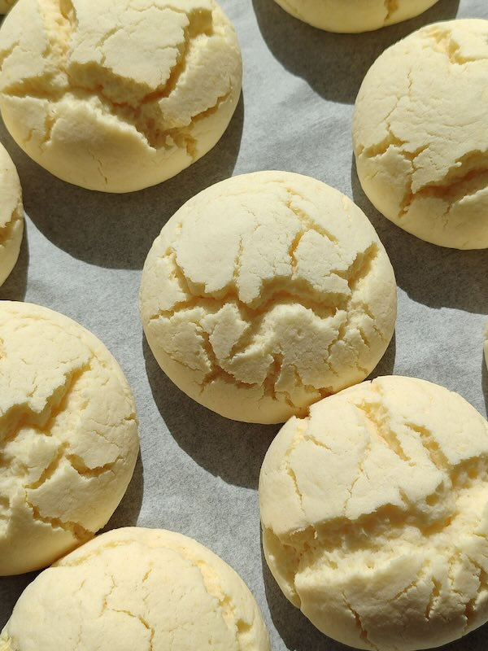

Drömmar
Drömmar är mycket spröda småkakor med mild vaniljsmak som är lätta att baka. Hjorthornssalt gör att kakorna får sin karakteristiska porösa och ljuvligt frasiga konsistens.

Ingredienser
Receptet ger ca 40–45 kakor
- 100 g smör
- 3 dl strösocker
- 1 dl rapsolja
- 2 tsk vaniljsocker
- 1 tsk hjorthornssalt
- 4 dl vetemjöl
Gör så här
- Sätt ugnen på 150 °C.
- Rör smör och socker mjukt.
- Tillsätt oljan, lite i taget, under vispning.
- Blanda vaniljsocker och hjorthornssalt med lite av mjölet och rör ned blandningen i smeten. Tillsätt sedan resten av mjölet.
- Rulla små bollar av degen och lägg dem på plåtar med bakplåtspapper.
- Grädda mitt i ugnen i cirka 15–20 minuter och låt kallna på plåten.